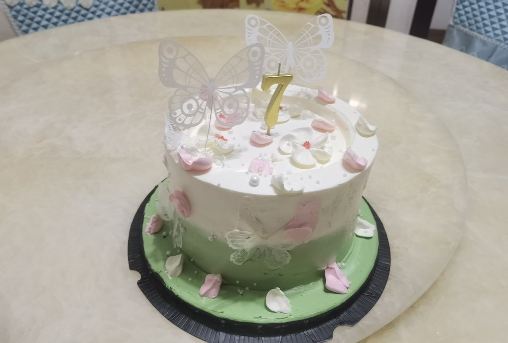

是早露泡泡兔呀
@Poca2381
RT @Raa67243038: 看了大家给苍穹的优秀生贺之后感到自惭形秽，为自己没有准备什么感到相当不好意思。 只能发点寒碜得不足以称为生贺的东西，本来都没有信心发了，但真的什么都不发那就真的有点感觉对不起穹姐。
祝苍穹生日快乐！明年一定提前给你认真准备
#着ぐるみ #ki…

天命玄鸟生于南冥☯️
@Raa67243038
看了大家给苍穹的优秀生贺之后感到自惭形秽，为自己没有准备什么感到相当不好意思。 只能发点寒碜得不足以称为生贺的东西，本来都没有信心发了，但真的什么都不发那就真的有点感觉对不起穹姐。
祝苍穹生日快乐！明年一定提前给你认真准备
#着ぐるみ #kigurumi #五维介质 #苍穹 https://t.co/2vNSEkgRdI